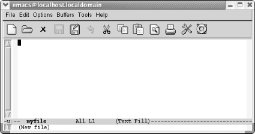

{% include JB/setup %}
{% raw %}
<div>
<div class="book" xml:lang="en"><div class="book"><div class="book"><div class="book"><h1 class="title"><a id="gnu3-PREFACE-2-SECT-8" class="calibre1"></a>Conventions Used in This Book</h1></div></div></div><p class="copyright">This section covers the conventions used in this book.</p><div class="book" xml:lang="en"><div class="book"><div class="book"><div class="book"><h2 class="title1"><a id="gnu3-PREFACE-2-SECT-8.1" class="calibre1"></a>Keystroke Notation</h2></div></div></div><p class="copyright">
               <a id="gnu3-PREFACE-2-ITERM-1465" class="calibre2"></a>Emacs commands
consist of a modifier, such as <span><strong class="calibre5">Ctrl</strong></span>
or <span><strong class="calibre5">Meta</strong></span>, followed by one or two
characters. Commands shown in this book abbreviate <span><strong class="calibre5">Ctrl</strong></span> to <span><strong class="calibre5">C</strong></span>
and <span><strong class="calibre5">Meta</strong></span> to <span><strong class="calibre5">M</strong></span>:</p><div class="book"><dl class="copyright"><dt class="book"><span>
                     <span><strong class="calibre5">C-g</strong></span>
                  </span></dt><dd class="calibre20"><p class="copyright">Hold down the <span><strong class="calibre5">Ctrl</strong></span> key and press
<span><strong class="calibre5">g</strong></span>.</p></dd><dt class="book"><span>
                     <span><strong class="calibre5">M-x</strong></span>
                  </span></dt><dd class="calibre20"><p class="copyright">Hold down the <span><strong class="calibre5">Meta</strong></span> key and press
<span><strong class="calibre5">x</strong></span>.</p></dd></dl></div><p class="copyright">Sometimes <span><strong class="calibre5">Meta</strong></span> is followed by a
literal hyphen character. In these cases, we spell out <span><strong class="calibre5">Meta</strong></span>:</p><div class="book"><dl class="copyright"><dt class="book"><span>
                     <span><strong class="calibre5">Meta</strong></span> 
                     <span><strong class="calibre5">-</strong></span>
                  </span></dt><dd class="calibre20"><p class="copyright">Hold down the <span><strong class="calibre5">Meta</strong></span> key and press
<span><strong class="calibre5">-</strong></span>.</p></dd></dl></div><p class="copyright">To complete a command you may need to press <span><strong class="calibre5">Enter</strong></span>. (This key may be labeled <span><strong class="calibre5">Return.)</strong></span>
            </p><div class="book"><dl class="copyright"><dt class="book"><span>
                     <span><strong class="calibre5">Enter</strong></span>
                  </span></dt><dd class="calibre20"><p class="copyright">Press the <span><strong class="calibre5">Enter</strong></span> key.</p></dd><dt class="book"><span>
                     <span><strong class="calibre5">Esc</strong></span>
                  </span></dt><dd class="calibre20"><p class="copyright">Can be used as an alternative to <span><strong class="calibre5">Meta</strong></span>. Press <span><strong class="calibre5">Esc</strong></span>, <span><em class="calibre7">release it</em></span>, then
press the next key.</p></dd></dl></div><p class="copyright">A few mouse commands use the <span><strong class="calibre5">Shift</strong></span>
key as a modifier, often in combination with the <span><strong class="calibre5">Ctrl</strong></span> key. This is abbreviated as:</p><div class="book"><dl class="copyright"><dt class="book"><span>
                     <span><strong class="calibre5">S-right</strong></span>
                  </span></dt><dd class="calibre20"><p class="copyright">Hold down <span><strong class="calibre5">Shift</strong></span> and click the right
mouse button.</p></dd><dt class="book"><span>
                     <span><strong class="calibre5">C-S-right</strong></span>
                  </span></dt><dd class="calibre20"><p class="copyright">Hold down <span><strong class="calibre5">Shift</strong></span> and <span><strong class="calibre5">Ctrl</strong></span> and click the right mouse button.</p></dd></dl></div><p class="copyright">All Emacs commands, even the simplest ones, have a full name; for
example, <span><strong class="calibre5">forward-word</strong></span> is equivalent
to the keystrokes <span><strong class="calibre5">M-f</strong></span>, and <span><strong class="calibre5">forward-char</strong></span> is equivalent to <span><strong class="calibre5">C-f</strong></span>. This tying of a command to a keystroke
combination is called a key binding. Some commands have only full
names, with no corresponding key binding.</p><p class="copyright">When we discuss a command, we'll give both its full
name and the keystrokes (if any) that you can type to invoke it.</p></div><div class="book" xml:lang="en"><div class="book"><div class="book"><div class="book"><h2 class="title1"><a id="gnu3-PREFACE-2-SECT-8.2" class="calibre1"></a>Command Tables</h2></div></div></div><p class="copyright">To find a group of commands quickly, look for tables in each section
that summarize commands. These tables are formatted like this:</p><div class="book"><a id="ch00-13-fm2xml" class="calibre2"></a><table class="calibre8"><colgroup class="calibre9"><col class="calibre10"/><col class="calibre10"/><col class="calibre10"/></colgroup><thead class="calibre11"><tr class="calibre12"><th class="calibre13">
                           <p class="copyright">Keystrokes</p>
                        </th><th class="calibre13">
                           <p class="copyright">Command name</p>
                        </th><th class="calibre14">
                           <p class="copyright">Action</p>
                        </th></tr></thead><tbody class="calibre15"><tr class="calibre12"><td class="calibre16">
                           <p class="copyright">
                              <span><strong class="calibre5">C-n</strong></span>
                           </p>
                        </td><td class="calibre16">
                           <p class="copyright">
                              <span><strong class="calibre5">next-line</strong></span>
                           </p>
                        </td><td class="calibre17">
                           <p class="copyright">Move to the next line.</p>
                        </td></tr><tr class="calibre12"><td class="calibre16">
                           <p class="copyright">
                              <span><strong class="calibre5">C-x C-f</strong></span>
                              <span><em class="calibre7">File</em></span>
                              <span>→</span> 
                              <span><em class="calibre7">Open File</em></span>
                           </p>
                        </td><td class="calibre16">
                           <p class="copyright">
                              <span><strong class="calibre5">find-file</strong></span>
                           </p>
                        </td><td class="calibre17">
                           <p class="copyright">Open a specified file.</p>
                        </td></tr><tr class="calibre12"><td class="calibre18">
                           <p class="copyright">(<span><em class="calibre7">none</em></span>)</p>
                        </td><td class="calibre18">
                           <p class="copyright">
                              <span><strong class="calibre5">yow</strong></span>
                           </p>
                        </td><td class="calibre19">
                           <p class="copyright">Print ineffable wisdom from the Pinhead in the minibuffer.</p>
                        </td></tr></tbody></table></div><p class="copyright">The first column shows the default key binding for the command, the
second column shows the command's full name, and the
third column describes what the command does. For example, pressing
<span><strong class="calibre5">C-n</strong></span> (also known as the <span><strong class="calibre5">next-line</strong></span> command) moves the cursor to the
next line in the file. Some commands, like <span><strong class="calibre5">C-x
C-f</strong></span>, can also be reached through menus. If there is a menu
option for a particular command, it is given in
<span><em class="calibre7">italics</em></span> below the keystrokes for the command.
For example, you can use the <span><strong class="calibre5">find-file</strong></span> command by typing <span><strong class="calibre5">C-x C-f</strong></span> or by selecting <span><strong class="calibre5">Open File</strong></span> from the <span><strong class="calibre5">File</strong></span> menu. Sometimes you'll
see (<span><em class="calibre7">none</em></span>) in the keystrokes column, which
doesn't mean you can't use the
command, but rather that the command isn't bound to
particular keystrokes. To use commands with no keystrokes, type
<span><strong class="calibre5">M-x</strong></span>, followed by the
command's full name, and press <span><strong class="calibre5">Enter</strong></span>. (Try typing <span><strong class="calibre5">M-x
pong Enter</strong></span> sometime.)</p></div><div class="book" xml:lang="en"><div class="book"><div class="book"><div class="book"><h2 class="title1"><a id="gnu3-PREFACE-2-SECT-8.3" class="calibre1"></a>Examples</h2></div></div></div><p class="copyright">Throughout the book, you'll find keystrokes to type,
followed by a screenshot showing the results.</p><div class="book"><a id="ch00-14-fm2xml" class="calibre2"></a><table class="calibre8"><colgroup class="calibre9"><col class="calibre10"/></colgroup><tbody class="calibre15"><tr class="calibre12"><td class="calibre17">
                           <p class="copyright">Type: <span><strong class="calibre5">C-x C-f</strong></span>
                              <em class="calibre7"><code class="calibre21">myfile</code></em>
                           </p>
                        </td></tr><tr class="calibre12"><td class="calibre17">
                           <p class="copyright">
                              </p><div class="book"><div class="mediaobject"><a id="I__tt3" class="calibre2"></a></div></div><p class="copyright">
                           </p>
                        </td></tr><tr class="calibre12"><td class="calibre19">
                           <p class="copyright">Use the <span><strong class="calibre5">find-file</strong></span> command to open a
file or create a new file.</p>
                        </td></tr></tbody></table></div><p class="copyright">
               <span><strong class="calibre5">C-x C-f</strong></span> is in bold, indicating that
this is exactly what you type. <em class="calibre7"><code class="calibre21">myfile</code></em> is
shown in constant width italics because you could substitute any
filename you choose and need not type exactly what you see here.</p><p class="copyright">Typically, these screenshots come from a Linux system. We also
include screenshots taken on Mac OS X and Windows. When we show such
screenshots, we include an indication of the platform in the caption
for the screenshot.</p><p class="copyright">Toward the end of the book, when we're discussing
programming modes, customization, and Lisp programming, screenshots
become rather unwieldy. We eventually use fewer of them. Instead, we
may show one or two lines of text. If it's relevant,
we show the cursor's position:</p><a id="I__tt4" class="calibre2"></a><pre class="programlisting">/* This is a <span>c</span> comment */</pre></div><div class="book" xml:lang="en"><div class="book"><div class="book"><div class="book"><h2 class="title1"><a id="gnu3-PREFACE-2-SECT-8.4" class="calibre1"></a>Font Usage</h2></div></div></div><p class="copyright">This book uses the following font conventions:</p><div class="book"><dl class="copyright"><dt class="book"><span>
                     <span><strong class="calibre5">boldface</strong></span>
                  </span></dt><dd class="calibre20"><p class="copyright">Indicates operating system commands, Emacs keystrokes, command names,
and variables.</p></dd><dt class="book"><span>
                     <span><em class="calibre7">italic</em></span>
                  </span></dt><dd class="calibre20"><p class="copyright">Indicates filenames, URLs, and new terms when first introduced.</p></dd><dt class="book"><span>
                     <code class="literal">constant width</code>
                  </span></dt><dd class="calibre20"><p class="copyright">Indicates buffer names, Lisp code, C code, Emacs messages, and other
excerpts from programs.</p></dd><dt class="book"><span>
                     <em class="calibre7"><code class="literal">constant width italic</code></em> 
                  </span></dt><dd class="calibre20"><p class="copyright">Indicates dummy parameters that you replace with an actual value. May
also be shown sometimes in angle brackets (&lt;filename&gt;).</p></dd></dl></div></div></div></div>

{% endraw %}

